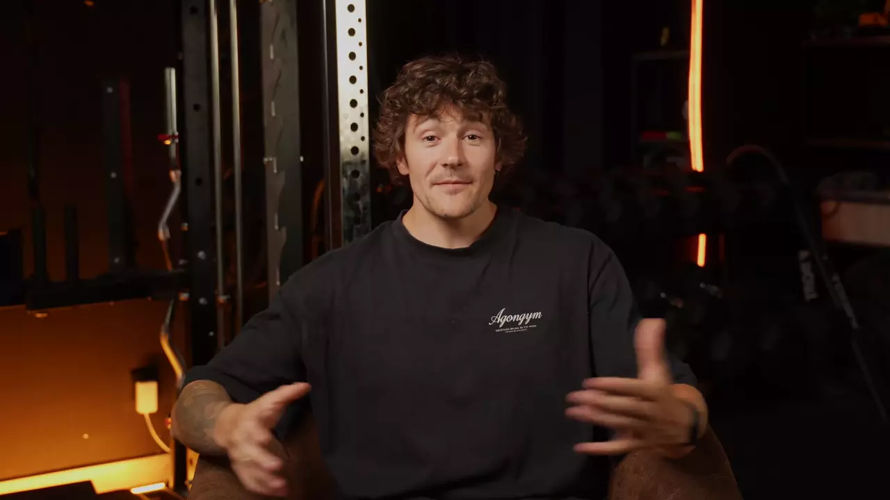
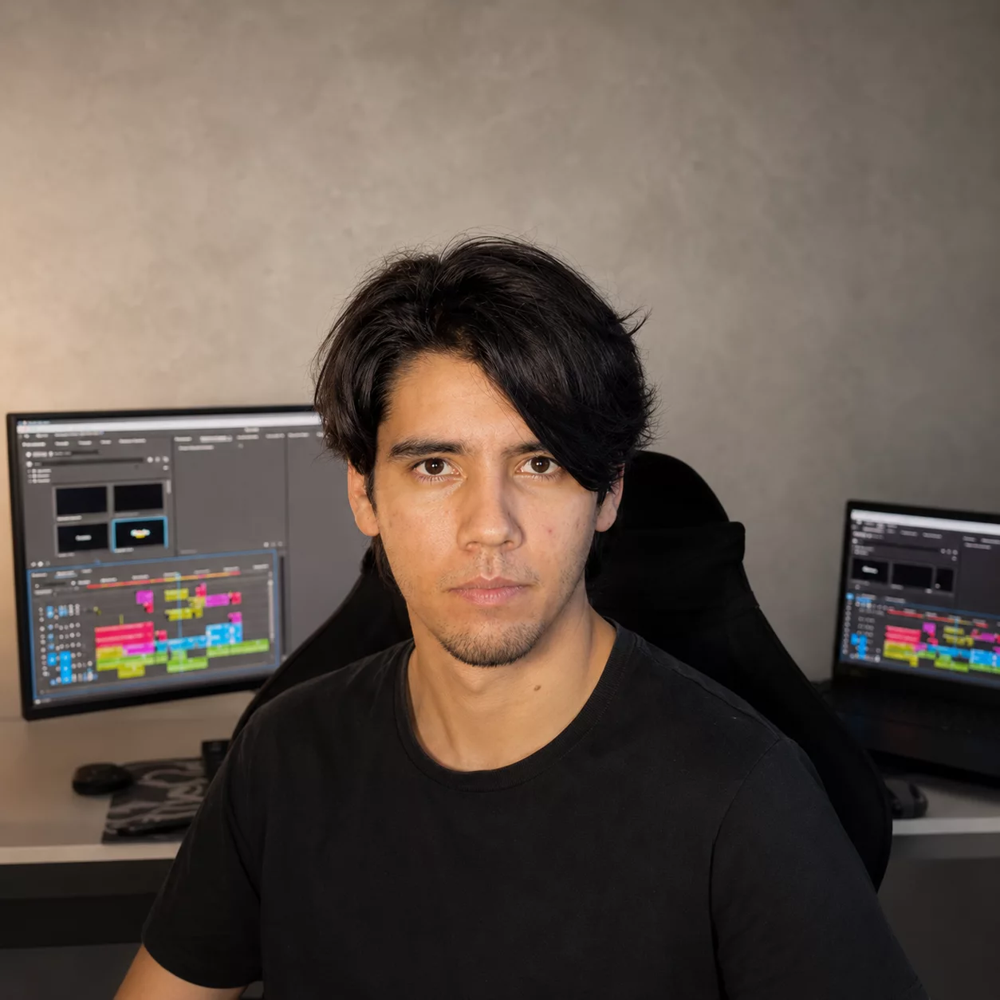
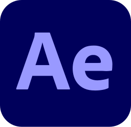

Estudio cómo las personas consumen información. Después edito.
Edición de video para marcas y creadores que necesitan contenido que la gente realmente mire. Reels, ads, YouTube: con criterio de retención, no solo estética.
Top Rated en Upwork · 100% Job Success · ES / EN / HE
001 MDA · Agencia · 9:16 · Reel
El reel de una agencia que trabaja con marcas grandes
Qué es
El reel de presentación de MDA, una agencia con la que estoy trabajando hoy. Tocá la pantalla para escucharlo.
Qué aparece en el reel
- Selección Española femenina de fútbol
- Juegos Olímpicos de Invierno
- El Corte Inglés
Proyectos de la agencia que muestra el reel.
Scrolleá: el iPhone se da vuelta
Top Rated en Upwork/100% Job Success/648 horas facturadas/21 contratos/Español · Inglés · Hebreo/Clientes Fortune 500 vía ICUC/
002 Inazio Coach · 9:16 · Reel publicitario
Ad de fitness para un creador con audiencia establecida
Qué necesitaba
Un anuncio vertical para redes que comunicara su servicio de coaching sin perder la identidad visual que su audiencia ya reconoce.
Qué hice
Edición de ritmo alto con hook en los primeros 2 segundos, subtítulos dinámicos, cortes sincronizados con la música y un CTA integrado en la narrativa.
Por qué así
Su audiencia ya consume contenido fitness todo el día. El ritmo visual tiene que competir con el scroll, no con otros coaches.
Editado
+50K
seguidores sumó el perfil entre enero y agosto de 2026: de 188K a 238K. Arrastrá para comparar.


Ene 2026
Ago 2026
00:00:00:00
Scrolleá para scrubbear el corte
003 Cosami · 9:16 · Branding, storytelling
Contenido de marca para una empresa de salsas con 60 años de tradición
Qué necesitaba
Un video que comunicara la identidad de Cosami, una fábrica de salsas y conservas fundada en 1964 en el Valle del Ebro, España. No era un producto nuevo buscando atención; era una marca con historia buscando presencia digital.
Qué hice
Edición atmosférica: guitarra española, planos de producto con textura, ritmo dinámico que respeta la tradición sin sentirse anticuado.
Por qué así
Cosami vende confianza, origen y sabor. El ritmo del video tiene que sentirse como abrir una buena botella, elegante y con música tradicional. La edición adapta el registro al ADN de la marca.
004 Aitor Zabaleta Korta · 16:9 · Intro de YouTube
Intro de YouTube para un Doctor en Ciencias del Deporte con 276K seguidores
Qué necesitaba
Una introducción para su canal que reflejara su perfil: Doctor en CAFYD, investigador en biomecánica, y creador en @fuerzaadiario. Profesional sin perder cercanía.
Qué hice
Edición horizontal para YouTube: ritmo que establece autoridad, transiciones limpias, tipografía que refuerza el posicionamiento académico-deportivo.
Por qué así
Una intro de YouTube no puede sentirse como un reel acelerado, pero tampoco aburrir. El balance: energía contenida de alguien que sabe de lo que habla.
005 Negocios locales y cuentas chicas
Cada presupuesto, la misma exigencia
Edición adaptada a lo que cada negocio necesita y puede invertir, sin bajar la calidad. Arrastrá o scrolleá →
{kind=link}
Mi enfoque no empieza en la timeline
Antes de abrir Premiere, pienso en la persona que va a ver el video. Cuánto tiempo le va a dar antes de decidir si sigue o scrollea. Qué información necesita primero. En qué momento pierde interés y por qué.
Proyecto
- A001_C012.mov0:30
- pantalla_B.mov0:04
- producto_giro.mov0:05
- musica_base.wav0:30
- Lumetri · cálidofx
Programa: Secuencia 01
Color de Lumetri
- Temperatura0,0
- Tinte0,0
- Exposición0,0
- Contraste0,0
- Altas luces0,0
- Sombras0,0
- Saturación100
Curvas RGB
C1
V2
V1
A1
A2
reel_v1.mp4H.264 · 1080×1920
0%Media Encoder
Estudio Medicina en la Universidad Nacional de Mar del Plata. No lo digo para impresionar, sino porque cambió mi forma de pensar el contenido. Estudiar cómo funciona la atención, la percepción, la memoria, la forma en que el cerebro procesa información visual y auditiva, me dio un framework que aplico cada vez que edito.
No soy neurocientífico. Pero pensar analíticamente sobre las personas (cómo procesan, qué retienen, qué ignoran) es algo que hago todo el día, en la facu y en la timeline.
Qué tengo en cuenta al editar
- Los primeros 2 segundos deciden si alguien se queda
- El ritmo de corte afecta la retención más que el contenido mismo
- Los cambios visuales previenen el decaimiento de la atención
- Los subtítulos cambian cómo se comprende un mensaje
- El sonido modifica la percepción de la energía de un video
- La jerarquía visual guía el ojo sin que el espectador lo note
Qué hago
01Short-form y redes
Reels, TikToks, Shorts, ads verticales. Hooks, subtítulos dinámicos, ritmo calibrado. Entrega express en 24–72 h si hace falta.
02YouTube y long-form
Videos largos, intros, contenido educativo. Edición que mantiene al espectador sin sobrestimulación.
03Ads y contenido comercial
Publicidad para redes y plataformas. Hook, mensaje, CTA, editado para que funcione como pieza de performance, no solo como video bonito.
04Contenido de marca
Videos de producto, storytelling, piezas institucionales. El registro visual se adapta a la identidad de cada marca.
05Subtítulos y adaptación
Subtítulos en archivo SRT/VTT o quemados al video, y adaptación de videos entre español, inglés y hebreo. Probalo acá abajo.
Un mismo mensaje, tres idiomas
Subtitulado y adaptación entre español, inglés y hebreo, con el hebreo de derecha a izquierda como corresponde. Es el tipo de proyecto de las reseñas de más abajo.

00:00:00:00 ESLos primeros 2 segundos deciden si alguien se queda.
Cómo trabajo
Cuatro pasos. Mismo orden en todos los proyectos.
Paso 1 de 4 · Día 0
Brief por WhatsApp
Me contás qué necesitás. Sin formularios, sin reuniones innecesarias. Si hace falta una llamada, la hacemos.
Paso 2 de 4 · < 4 h
Propuesta en menos de 4 horas
Presupuesto, timeline y alcance. Claro, sin letra chica. Si no encaja, no pasa nada.
Paso 3 de 4 · 5–7 días
Primera versión
En 5 a 7 días, o en 24–72 h si es urgente. Comunicación directa mientras trabajo, no desaparezco.
Paso 4 de 4 · Entrega
Ajustes y entrega final
Revisiones incluidas hasta que quede bien. Entrega en todos los formatos que necesites.
- Brief por WhatsApp: Me contás qué necesitás. Sin formularios, sin reuniones innecesarias. Si hace falta una llamada, la hacemos.
- Propuesta en menos de 4 horas: Presupuesto, timeline y alcance. Claro, sin letra chica. Si no encaja, no pasa nada.
- Primera versión: En 5 a 7 días, o en 24–72 h si es urgente. Comunicación directa mientras trabajo, no desaparezco.
- Ajustes y entrega final: Revisiones incluidas hasta que quede bien. Entrega en todos los formatos que necesites.
100%Job Success Score
648horas facturadas
21contratos: 15 terminados, 6 en curso
Top Rateden Upwork
“Fue un verdadero placer trabajar con Danilo. Gran comunicación, entendimiento rápido de los requerimientos y resultados de alta calidad. Totalmente recomendado.”
“Otra gran experiencia trabajando con Danilo. Muy profesional, comunicativo y entrega excelentes resultados. ¡Altamente recomendado!”
“Danilo hizo un gran trabajo. Muy receptivo, creó un video profesional y se aseguró de que todo lo que necesitaba se hiciera perfectamente. Lo recomiendo totalmente.”
Reseñas públicas de mi perfil de Upwork, traducidas del inglés. Los números salen del mismo perfil.

Estudio Medicina. Edito video. Hablo tres idiomas.
Tengo 21 años, estudio Medicina en la UNMdP y edito video desde hace más de 3 años. Empecé freelanceando entre clases. Hoy trabajo con creadores de +200K seguidores, marcas españolas con 60 años de historia y empresas vía ICUC para clientes Fortune 500.
Top Rated en Upwork con 100% de Job Success Score. Trabajo desde Mar del Plata para clientes en España, Estados Unidos, Israel y el resto de Latinoamérica.
Hablo español nativo, inglés (B2/C1, aprendido por mi cuenta a los 7 años) y hebreo oral (viví 6 años en Israel). Los idiomas no son mi servicio principal, pero sí un contexto que me permite trabajar con equipos y audiencias internacionales sin fricción.
- Premiere Pro

After Effects- DaVinci Resolve
- CapCut
 Photoshop
Photoshop

Estimá tu proyecto
Elegí el tipo de contenido, el volumen y la complejidad. Vas a obtener una referencia orientativa en USD. Después te envío una propuesta exacta según el proyecto.
Tipo de proyecto
Duración 1 min
Urgencia
Complejidad
Referencia orientativa
$55 – $70
USD · estimado total
Reel estándar
Edición short-form con cortes, subtítulos y ritmo orientado a retención.
Pedir propuesta formal
Propuesta exacta en menos de 4 horas.
¿Tenés un proyecto?
Respondo en menos de 4 horas. Sin formularios, sin burocracia.
WhatsApp · ediciones@danilohurwitz.app
Tu visita, editada00:00:00:00
Esto es lo que miro en cada video: dónde se queda la gente y dónde se va. Se calcula en tu navegador mientras mirás; no se guarda ni se envía a ningún lado.
- Edición y montaje
- Danilo Hurwitz
- Trabajos en esta página
- MDA · Inazio Coach · Cosami · Aitor Zabaleta Korta · MV Steelframe · Almacén de Colchones · CAOS Club · Clínica Dental Alvaro Sainz
- Herramientas
- Premiere Pro · After Effects · DaVinci Resolve · CapCut
- Idiomas
- Español · English · עברית
- Editado en
- Mar del Plata, Argentina
Fin © 2026